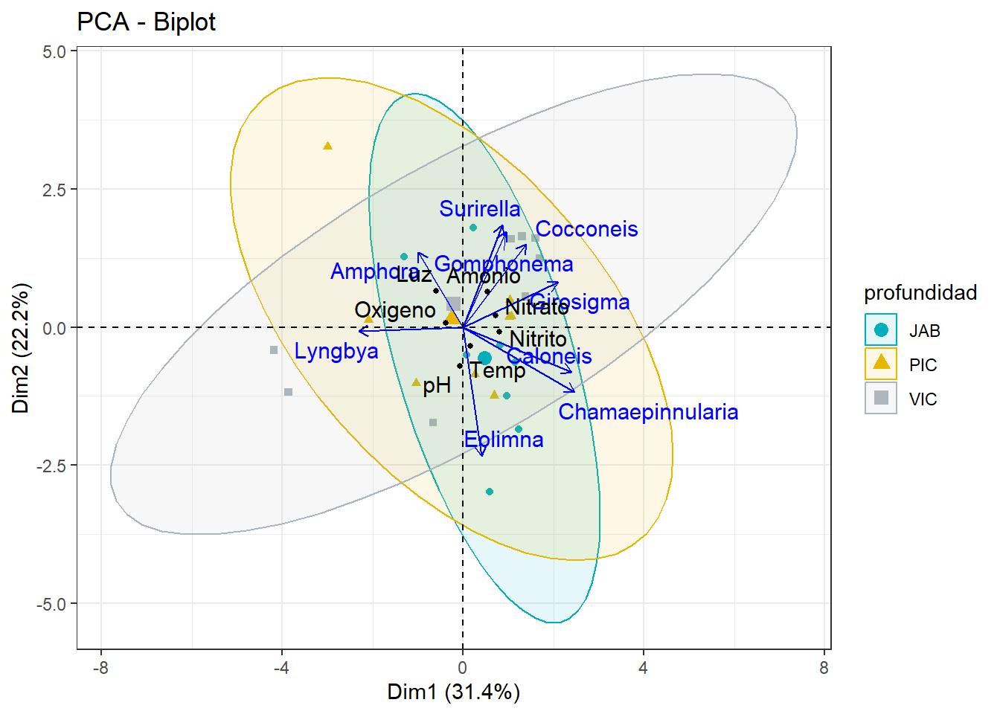
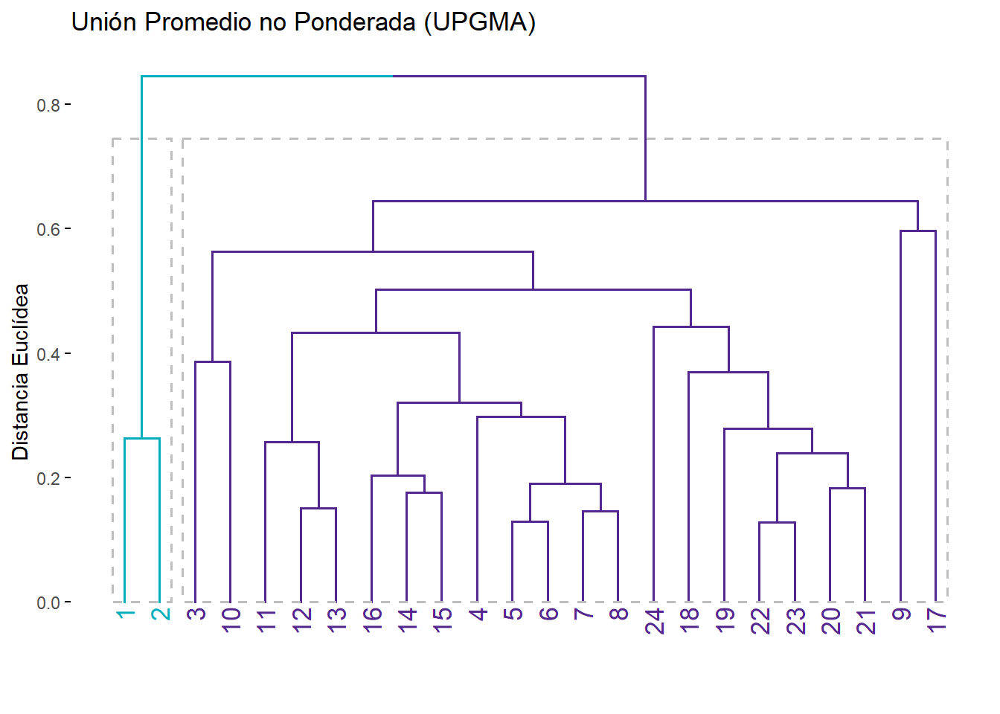

| Tributarios | Amonio | Nitrito | Nitrato | Oxigeno | pH | Luz | Temp | Den | Achnanthes | Amphora | Caloneis | Chamaepinnularia | Cocconeis | Eolimna | Girosigma | Gomphonema | Surirella | Lyngbya |
|---|---|---|---|---|---|---|---|---|---|---|---|---|---|---|---|---|---|---|
| VIC | 0.301 | 0.838 | 0.901 | 7.68 | 8.10 | 800 | 17.6 | 34.334 | 0.000 | 1.333 | 0.000 | 0.667 | 3.000 | 4.667 | 0.000 | 0.000 | 0.667 | 24.000 |
| VIC | 0.301 | 0.779 | 0.830 | 6.54 | 7.45 | 400 | 18.3 | 32.999 | 0.000 | 1.000 | 0.000 | 0.333 | 6.333 | 8.000 | 0.000 | 0.000 | 0.000 | 17.333 |
| VIC | 1.107 | 1.176 | 3.430 | 5.62 | 7.81 | 300 | 17.1 | 22.667 | 0.000 | 0.000 | 0.000 | 3.333 | 8.667 | 8.000 | 0.000 | 0.667 | 0.000 | 2.000 |
| VIC | 1.024 | 0.882 | 2.670 | 6.08 | 9.21 | 100 | 18.6 | 41.000 | 0.333 | 0.667 | 2.333 | 6.333 | 10.000 | 8.000 | 2.667 | 3.667 | 1.667 | 5.333 |
| VIC | 0.194 | 0.147 | 0.524 | 5.10 | 9.24 | 800 | 17.9 | 131.334 | 1.667 | 3.000 | 4.000 | 13.333 | 52.667 | 23.333 | 6.667 | 11.000 | 10.000 | 5.667 |
| VIC | 0.206 | 0.471 | 0.895 | 5.60 | 9.63 | 200 | 17.8 | 130.000 | 2.000 | 3.333 | 9.333 | 9.667 | 52.333 | 20.667 | 4.333 | 9.667 | 9.667 | 9.000 |

Introducción
Los ecosistemas acuáticos son importantes y complejos, esto dado que albergan una alta diversidad en su biota y almacenan agua, una de las moléculas más importantes en el planeta. (Gordillo-Guera et al., 2021). En estos, se encuentran diferentes comunidades, sin embargo, dentro de ellas, una de las más representativas es el perifiton, el cual es considerado como una comunidad compleja de microrganismos adheridos a un sustrato natural o artificial, orgánico o inorgánico, vivo o muerto (Wetzel, 1983). El perifiton constituye un componente esencial de las comunidades bióticas acuáticas, en estas desarrollan un rol fundamental en los procesos de transferencia de energía, materia e información a través de las redes tróficas (Montoya-Moreno & Aguirre, 2013). Entre los organismos más sobresalientes de dicha comunidad se encuentran las microalgas; las cuales representan formas de vida unicelulares de tamaño variable entre 1 µm y 200 µm; que cumplen un papel esencial como productoras primarias dominantes de gran importancia para la estructura y el funcionamiento de los ecosistemas loticos (Guerrón-Navarrete, 2015). Esto dado que, son uno de los principales puntos de ingreso de energía; se encargan de la fijación de carbono inorgánico, proporcionan refugio y alimento a diferentes tipos de organismos, y presentan altas tasas de reciclaje de nutrientes, contribuyendo con más del 70 % de la producción de materia orgánica (Gómez et al., 2009). En Colombia los estudios se han enfocado en comunidades de diatomeas en zonas andinas y algunas llanuras del rio amazona (Martínez & Donato, 2003). Con la intención de determinar cómo funcionan los ambientes loticos, dejando un sesgo en información acerca de la distribución, diversidad y distribución de comunidades de fitoperifitas son escasos en ecosistemas loticos tropicales (Osorio Ávila et al., 2015).
Dentro de los estudios de composición entre la comunidad de algas perifitas en Colombia se ha encontrado que el grado de contaminación causadas por impactos ganaderos y algunos otros aspectos antrópicos generan un notable cambio en la composición, abundancia relativa, diversidad y distribución, demostrando que estos cambios están explicados por la variación de variables fisicoquímicas como lo son los metales pesados, nutrientes y variables hidrológicas (Jiménez-Pérez et al., 2014). Según Padilla-García & Franco-Higuita (2021), en la sierra nevada en el marco del rio Gaira, los factores físicos y ambientales se mantienen pese a la presión antropogénica en distintos puntos del tramo del rio Gaira, ya que las precipitaciones anuales y marcadas en cada estación ayudan a mantener la estructura y funcionalidad de los cuerpos de agua. Además, la estructura general de la composición biológica ha encontrado estrategias que le han ayudado a adaptarse a este tipo de fluctuaciones en el ambiente. En los estudios de calidad de los ambientes loticos en la sierra nevada de Santa Marta hay poca información sobre el rol ecológico de las microalgas, la fluctuación de abundancia y así puede ayudar a usar este grupo biológico como especie clave para determinar que afectado está el tramo medio del rio Gaira por presiones antropogénicas.
Objetivos
Objetivo general
Analizar la diferencia en la densidad y la composición de las microalgas periféricas con diferentes niveles fisicoquímicos en tres tributarios del sector medio del rio Gaira SNSM.
Objetivos específicos
- Determinar la relación entre los parámetros fisicoquímicos y la densidad de los taxones Microalgas Perifíticas en tres Tributarios de la cuenca media del Rio Gaira.
- Determinar la relación de la densidad entre taxones de Microalgas Perifitícas en tres Tributarios de la cuenca media del Rio Gaira.
- Determinar las variaciones de la densidad de microalgas y los factores fisicoquímicos de en cada uno de los tributarios del Rio Gaira, SNSM, Colombia.
Pregunta de análisis
¿Cuál es la variación en la densidad y la composición de las microalgas perifiticas con diferentes niveles fisicoquímicos en tres tributarios del sector medio del rio Gaira SNSM??
Hipótesis
H0: No existe diferencia en la densidad y la composición de microalgas perifíticas con diferentes niveles fisicoquímicos en los tres Tributarios de la cuenca media del Rio Gaira.
Ha: Existe diferencia en la densidad y la composición de microalgas perifíticas con diferentes niveles fisicoquímicos en los tres Tributarios de la cuenca media del Rio Gaira.
Flujograma
PENDIENTE
Base de datos
En la Tabla 1 se presenta un resumen de la base de datos Microalgas.
Exploracion grafica
Figura de elipces
1. Ambientales VS biologicas

En la Figura 1 se observan algunas relaciones lineales fuertes entre taxones como es el caso de Surirella con Girosigma y Gomphonema. Las relaciones màs fuertes se estan dando entre parejas de taxones. Sin embargo en general no se presentan muchas relaciones lineales fuertes tanto positivas como negativas.
Linealizacion de las variables
Transformacion de Hellinger y log10
Las variables ambientales se trasformaron con logaridmo base 10 mas uno para evitar los valores negativos (log10+1). Las variables biológicas (Taxones) fueron trasformados con Hellinger.
2. Ambientales VS biologicas trasformadas

En la Figura 2 se observa que las trasformaciones (Log10 y Hellinger) mejoraron algunas relaciones negativas entre la Luz y los taxones sin enbargo disminuyeron algunas relaciones positivas entre los parejas de taxones.
3. Biologicas VS Biologicas transformadas con Hellinger

En la Figura 3 se observan unicamente relaciones lineales positivas entre parejas de taxones y se descartan las relaciones más bajas. En general todas las relaciones son batante fuertes las más significativas estan dadas entre Calonesis con Girosigma y Chamaepinnularia con Eolimna. Se observaque en mayor o menor proporcion la presencia de los diferentes taxones se encuentra favoreciendo a los demás taxones.
4. Ambientales VS Biolagicas transformadas con Log10 y Hellinger

En la Figura 4 se observan muy pocas relaciones significativas entre las variables fisicoquimicas y los taxones. Se encuentran algunas relaciones negativas entre la Luz y Surirella, Lyngbya, Eolimna y Gomphonema. En cuanto a las demás parejas de variables se aprecian algunas relaciones positivas con la temperatura y el pH, siendo la relacion entre la temperatura y Surirella la más fuerte.
Figuras de cajas
Para desarrollar las figuras de cajas se incluyó una nueva columna (Den) en la base de datos, que representa la densidad total de taxones en cada tributario.
6. Densidad total de taxones por tributario

En la Figura 5 se puede observar que las cajas se encuentran solapadas y las medianas de los tres tributarios son practicamente iguales, además existe unan alta dispersion de los datos, lo que indica que no existe una verdadera diferenciacion en la densidad de microalgas entre cada tributario evaluado.
7. Densidad de taxones por tributario

En la Figura 6 se observa que en general para la mayoria de los taxones no existe una diferencia en la densidad total de microalgas por cada tributario, las medias de los tres tributarios son similares y los intervalos de confianza se encuentran solapados. Para el taxon Achnanthes se puede observar que en tributario Jabali los datos de densidad se alejan de la tendencia anteriormente mencionada y en otros taxones como Girosigma y Suriella los valores de densidad presentan una dispercion mucho mayor en el tributario La Victoria.
8. Fisicoquimicos por tributario

En la Figura 7 se observa que para todas las variables ambientales los valores de la media son muy similares o incluso iguales en algunos casos para cada uno de los trubutarios, mientras que el rango de los datos varia mucho más entre tributarios para algunas variables como el Nitrito. Sin embargo para todos los fisicoquimicos exepto el Oxigeno existe la precencia de outliers los cuales pueden causar sesgos en parametros como la media, distarcionar considerablemente el analisis grafico alterando las escalas lo que puede ocacionar que los datos parescan más dipersos de lo que en verdad son. Todo esto puede ocultar patrones importantes llevando a conclusiones sesgadas.
Figuras de barras
Los graficos de barras se elaboraron con Exel, utilizando las ocho replicas dentro de cada tributario.

Figura 8 En general los valores más altos de densidad se observaron en La Victoria el cual es el tributario con mayor nivel de intervención antropogénica debido a la deforestación de la fauna nativa para el cultivo de café. Esto se podría relacionar con un mayor ingreso de nutrientes lo que favorece el crecimiento de las microalgas. En contraste los valores más bajos de densidad se observaron en el tributario Jabali el cual presenta niveles bajos de intervención antropogénica.

Figura 9 En general los valores más altos de densidad se observaron en La Victoria el cual es el tributario con mayor nivel de intervención antropogénica debido a la deforestación de la fauna nativa para el cultivo de café. Esto se podría relacionar con un mayor ingreso de nutrientes lo que favorece el crecimiento de las microalgas. En contraste los valores más bajos de densidad se observaron en el tributario Jabali el cual presenta niveles bajos de intervención antropogénica.
Análisis de Componentes Principales (PCA)
9. Contribución de cada dimensión o componente principal

En la Figura 10 se obserba que el primer componente recoge una varianza del 46.6% mientras que el segundo componente recoge un 15.% de la varianza.

En la Figura 11 se obserba que Lyngbya es el taxon de mayor aporte en el primer componente.

En la Figura 12 se obserba que Amphora, Eolimna, Caloneis, Cocconeis y Gomphonema son los taxones de mayor aporte en el segundo componente.
10. Figura del PCA

En la Figura 13 se observa un solapamiento en los 3 tributarios del tramo medio del rio Gaira, además muestra una gran similitud en los factores fisicoquímicos por lo que existe condiciones para que la composición de taxones sea muy similar en los 3 tributarios. Dentro de las especies en la cual se realizó el PCA solo se encontró que Lyngbya y Cocconeis no se comparten en los 3 tributarios, estando presentes solo en PIC y VIC.
Escalamiento multidimencional no metrico (NMDS)
11. Figura del NMDS

La Figura 14 muestra que el stress del NMDS es de 0,043 lo cual indica que la representación bidimensional de los datos es buena. Se obserba un solapamiento entre las elipses lo cual indica que los tres tributarios son bastante similares en terminos de la dendidad de taxones, en el caso de Jabali tiende ligeramente a separarse de los demas tributarios. Existe una alta similitud entre los taxones Gomphonema Cocconeis, Girosigma y Chamaepinnularia las cuales se encuentran concentradas para los tres tributarios, mientras que los taxones Achnanthes, Lyngbya, Amphora y Surirella se encuentran más diferenciados.
Análisis Clúster - CLA
Tabulación de los valores cofenéticos
| Met | Cofen | |
|---|---|---|
| upgma | 3 | 0.855 |
| upgmc | 4 | 0.819 |
| wpgma | 5 | 0.818 |
| simple | 1 | 0.746 |
| compl | 2 | 0.659 |
| wpgmc | 6 | 0.633 |
| ward | 7 | 0.624 |
En la Tabla 2 se presentan los valores confeneticos en orden descendiente.
12. Número de grupos formados - figura de silueta

Según el metodo de silueta el numero optimo de grupos para el conjunto de datos es de dos k cluster.
13. Figura del dendograma jerárquico

El dendograma jerárquico para dos k clúster fue determinado por el método de silueta (Figura 15), en el clúster azul, se encuentran solo 2 observaciones, las cuales corresponden al tributario La Victoria mientras que las observaciones restantes se encuentran concentradas en un solo clúster (morado). Esto indica una gran similaridad entre la densidad de los taxones en los tres tributarios estudiados. Dentro del segundo clúster (morado) se identifican algunas observaciones que se diferencian parcialmente como la 9 y 17 las cuales corresponden a La Victoria y La Picua respectivamente. En general el modelo no logra clasificar los tributarios basado en la densidad de taxones.
14. Figura del dendograma no jerárquico
En la Figura 17 se observa claramente la formación de dos k clúster, sin embargo, estos grupos no alcanzan a recoger el 50% de los datos de cada clúster, en especial en el segundo clúster. En general existe una baja capacidad para discriminar el conjunto de datos, los cuales se encuentran muy dispersos fuera de los grupos, algunas observaciones se alejan considerablemente de los grupos (1,2,9,18) y otras se mezclan entre los grupos (4 y 19). Sumado a esto la varianza capturada en las primeras dos dimensiones apenas alcanza el 53,6%.
Referencias
Gómez, N., Donato, J., Giorgi, A., Guasch, H., Mateo, P., & Sabater, S. (2009). La biota de los ríos: Los microorganismos autótrofos. Conceptos y técnicas en ecología fluvial, 219-242.
Gordillo-Guera, J. G., López-Delgado, E. O., Parra Trujillo, Y. T., & Reinoso Flórez, G. (2021). Composición y estructura de la comunidad de algas perifíticas del río Alvarado y algunos tributarios (Tolima, Colombia). Revista Facultad de Ciencias Básicas, 16(1), 31-42. https://doi.org/10.18359/rfcb.4870
Jiménez-Pérez, P., Toro-Restrepo, B., & Hernández-Atilano, E. (2014). RELACIÓN ENTRE LA COMUNIDAD DE FITOPERIFITON Y DIFERENTES FUENTES DE CONTAMINACIÓN EN UNA QUEBRADA DE LOS ANDES COLOMBIANOS: RELACIÓN FITOPERIFITON Y CONTAMINACIÓN AMBIENTAL. Boletin Cientfico. Centro de Museos. Museo de Historia Natural, 18, 49-66. http://www.scielo.org.co/scielo.php?script=sci_arttext&pid=S0123-30682014000100003&nrm=iso
Martínez, L. F., & Donato, J. (2003). EFECTOS DEL CAUDAL SOBRE LA COLONIZACIÓN DE ALGAS EN UN RÍO DE ALTA MONTAÑA TROPICAL (BOYACÁ, COLOMBIA). Caldasia, 25(2), 337-354. https://revistas.unal.edu.co/index.php/cal/article/view/39386
Montoya-Moreno, Yimmy, & Aguirre, R. N. (2013). State of the art on periphyton knowledge in Colombia; Estado del arte del conocimiento sobre perifitonen Colombia (Vol. 16).
Osorio Ávila, F. J., Rodríguez Barrios, J., & Montoya Moreno, Y. (2015). SUCESIÓN DE MICROALGAS PERIFÍTICAS EN TRIBUTARIOS DEL RÍO GAIRA SIERRA NEVADA DE SANTA MARTA-COLOMBIA. Acta Biológica Colombiana, 20(2). https://doi.org/10.15446/abc.v20n2.41932
Padilla-García, C. A., & Franco-Higuita, Y. A. (2021). Evaluación de la calidad del agua y su relación con factores antrópicos y del hábitat en el tramo medio del río Gaira en la Sierra Nevada de Santa Marta, Colombia.
Wetzel, R. (1983). Opening remarks. Pp: 3-4. En: Wetzel, R., (Ed.). Periphyton of freshwater ecosystems. Proceedings of the First International Workshop on Periphyton of Freshwater Ecosystems held in Vaxjo, Sweden, 14-17 September 1982. Dr. W. Junk Publishers. The Netherlands.